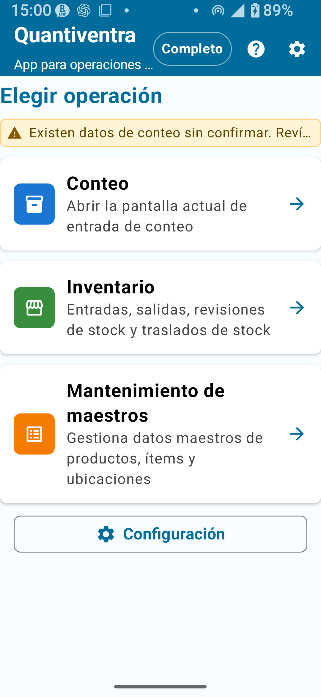
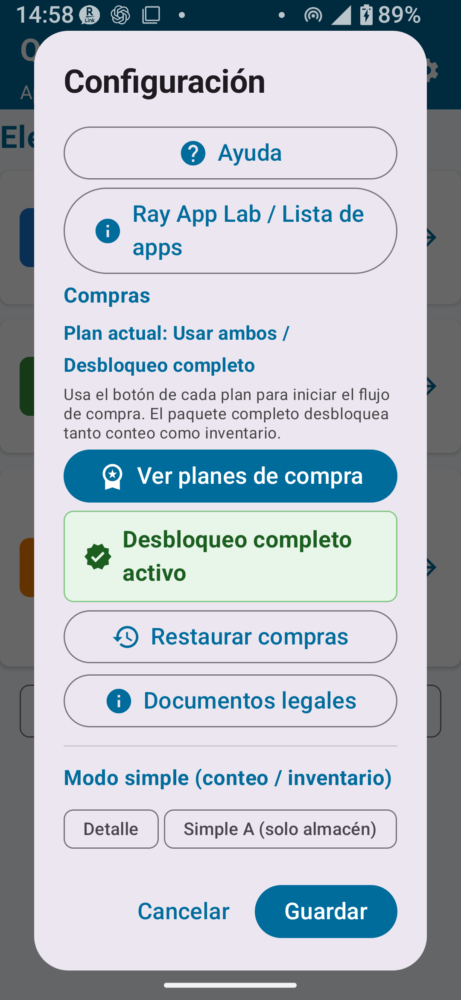

Descripción de la app, requisitos del sistema, ajustes, permisos, planes, datos de ejemplo, glosario y avisos legales
Escanea el QR para abrir
Descargar en Google Play
Escanea el código QR para abrir la página de la tienda o toca la insignia de abajo para ir a Google Play.
Temas tratados en esta página: ¿Qué es Quantiventra? / Requisitos y permisos / Instalación y primer uso / Almacenamiento de datos / Diferencia entre inventario físico y gestión de existencias / Guía rápida / Pantalla de inicio / Pantalla de ajustes / Idioma / Descripción de planes / Datos de ejemplo / Resolución de problemas / Glosario / Términos legales
CAPÍTULO 1
¿Qué es Quantiventra?
Quantiventra es la combinación de "Quantity" (cantidad) e "Inventory" (inventario/existencias). Es una app Android que simplifica el inventario físico y la gestión de existencias mediante el escaneo de códigos de barras con la cámara del smartphone.
Solo tienes que apuntar la cámara a un código de barras para reconocer el producto automáticamente, luego ingresa y guarda la cantidad — un flujo intuitivo que digitaliza los recuentos en papel. Los resultados se guardan como archivos CSV, fáciles de usar en Excel o Google Sheets.

Fig. 1-1 Pantalla de inicio de Quantiventra
Funcionalidades principales
📦 Conteo de existencias
Reconoce productos rápidamente mediante escaneo de código de barras y registra cantidades al instante. La calculadora integrada facilita la suma de conteos de múltiples ubicaciones.
🗂️ Gestión de catálogos
Registra productos, categorías y ubicaciones como datos de catálogo. También admite importación masiva vía CSV.
📍 Gestión de ubicaciones
Registra bodegas, tiendas, estantes y otras ubicaciones, y consulta las existencias por ubicación. También puedes definir qué ubicaciones se toman como referencia para la reposición.
📊 Importación/Exportación CSV
Exporta listas de existencias, respaldos e historial en formato CSV para consolidarlos en Excel o Google Sheets.
🌐 Soporte multilingüe
Compatible con 12 idiomas, incluyendo español, inglés, japonés, chino y coreano. Puede iniciar con el idioma del dispositivo si ese idioma está disponible.
⭐ Funcionalidades versión completa
Elimina los límites de artículos y desbloquea gestión detallada de ubicaciones, transferencias de existencias, aplicación del inventario a las existencias y mucho más.
Cómo funciona el escaneo con cámara
Cuando un código de barras se encuentra dentro del marco guía (borde azul o amarillo) en el centro de la pantalla, la app lo confirma automáticamente después de detectar el mismo código en 3 fotogramas consecutivos. Este mecanismo de triple confirmación previene lecturas incorrectas garantizando al mismo tiempo un reconocimiento confiable.
💡 Si el código no se reconoceEl código de barras debe estar completamente dentro del marco guía. Los códigos parcialmente fuera del marco no se detectan. Ajusta la posición de la cámara hasta que el código esté completamente dentro del marco.
CAPÍTULO 2
Requisitos del sistema y permisos
Elemento
Requisito
Sistema operativo
Android 8.0 (Oreo / API 26) o superior
Cámara
Cámara con enfoque automático (obligatorio)
Almacenamiento
Mínimo 10 MB de espacio libre en almacenamiento interno (recomendado)
Permisos requeridos
Cámara (obligatorio)
Internet
No necesario para el uso habitual; algunas funciones, como compras, restauración de planes o enlaces externos, pueden requerir conexión
Google Play Services
Necesario para compras y restauración de planes
💡 Permiso de almacenamientoLa app guarda los datos en el almacenamiento interno privado de la app en Android. No se requiere permiso de almacenamiento. El intercambio de datos se realiza mediante las funciones de importar, exportar y compartir de la app.
CAPÍTULO 3
Instalación y primer uso
Busca "Quantiventra" en Google Play Store y toca Instalar.
Abre la app tocando su ícono. Cuando aparezca la solicitud de permiso para la cámara, toca Permitir.
Si aparece el aviso de datos de ejemplo, elige Crear u Omitir.
La carpeta de datos de la app se crea automáticamente en el almacenamiento interno.
Cuando aparezca la pantalla de inicio, la configuración inicial está completa.
⚠ Si se niega el permiso de cámaraEl escaneo de códigos de barras no estará disponible. Para habilitarlo nuevamente: Ajustes → Aplicaciones → Quantiventra → Permisos → Cámara → Activar.
Después de cambiar de dispositivo
En el dispositivo anterior, exporta o comparte los datos desde Ajustes → Exportar o Ajustes → Compartir.
En el nuevo dispositivo, inicia sesión con la misma Cuenta de Google.
Instala Quantiventra desde Google Play.
Usa Ajustes → Restaurar compras para recuperar los planes adquiridos.
Importa los CSV de catálogo guardados mediante Ajustes → Importar CSV de catálogo.
🚨 Atención al desinstalarDesinstalar la app elimina todos los datos del almacenamiento interno. Crea el hábito de hacer respaldos regulares mediante Exportar o Compartir.
CAPÍTULO 4
Almacenamiento de datos
Los datos de la app se guardan en el área privada de la app en el dispositivo. No los edites directamente con un administrador de archivos. Usa las funciones de Compartir y Exportar de la app para acceder a los datos o hacer respaldos.
Categoría
Contenido
Cuándo se actualiza
Datos de catálogo
Datos principales de productos, categorías, ubicaciones, etc.
Al registrar, editar o desactivar un elemento
Historial de inventario y existencias
Registros de inventarios, entradas, salidas, transferencias, importación CSV, etc.
Al guardar o importar un registro
Ajustes de la app
Idioma, escaneo, reglas de código, configuración de ubicaciones, etc.
Al cambiar los ajustes
Cómo abrir CSV en Excel
Los archivos CSV se guardan en UTF-8. Para evitar caracteres dañados, se recomienda importarlos desde Excel.
Abre Excel y selecciona Datos → Desde texto/CSV.
Selecciona el archivo CSV.
Elige Unicode (UTF-8) como codificación.
Haz clic en Cargar.
⚠ No abras el CSV con doble clicAbrir el archivo directamente puede causar caracteres corruptos. Importa el archivo desde la pestaña Datos.
Procedimiento de respaldo recomendado
Toca Ajustes → Exportar (Elegir carpeta).
Crea y selecciona una carpeta de respaldo en la carpeta Documentos del dispositivo, ej.: Quantiventra_backup_20250401.
El respaldo está completo cuando se hayan guardado los archivos CSV del historial y los datos de catálogo.
Para mayor seguridad, copia los archivos a la computadora mediante Google Drive o cable USB.
CAPÍTULO 5
Inventario físico y gestión de existencias
Elemento
Inventario físico
Gestión de existencias
Propósito
Contar y registrar cantidades reales
Rastrear variaciones de existencias mediante entradas, salidas y transferencias
Entrada/Salida/Transferencia → Guardar → Ver historial
Uso común
Inventarios mensuales, inventarios de fin de año, verificaciones puntuales
Gestión diaria de entradas, salidas y transferencias
Impacto en existencias
Aplicado a existencias tras confirmación (versión completa)
Reflejado inmediatamente en cada operación
⚠ AtenciónEl inventario físico y la gestión de existencias son módulos separados. Ingresar cantidades en el inventario no modifica las existencias, a menos que se ejecute la operación "Aplicar a existencias" (funcionalidad de la versión completa). No confundas los dos módulos.
CAPÍTULO 6
Guía rápida para nuevos usuarios
Paso 1: Practica con los datos de ejemplo
Abre la app; si aparece el aviso para crear datos de ejemplo, elige Crear.
Desde la pantalla de inicio, abre Gestión de existencias y revisa los niveles de existencias de ejemplo.
Abre Inventario físico y prueba escanear un código de barras e ingresar una cantidad.
Prueba exportar un archivo CSV.
Antes de comenzar operaciones reales, elimina los datos de ejemplo (desde la pantalla de Ajustes).
Paso 2: Registra los productos en el catálogo
Desde la pantalla de inicio, abre Gestión de catálogos.
Ve a Catálogo de productos, crea un nuevo elemento e ingresa el código y el nombre del producto.
Establece categoría, precio y punto de reposición si es necesario.
Registra bodegas, tiendas, etc. en el Catálogo de ubicaciones (recomendado para la versión estándar o superior).
💡 ConsejoSe recomienda familiarizarse con los datos de ejemplo antes de ingresar datos reales de productos.
CAPÍTULO 7
Pantalla de inicio
Punto de acceso
Descripción
Inventario físico
Abre la pantalla de inventario para escanear productos y registrar las cantidades reales
Gestión de existencias
Accede a consulta de existencias, entrada, salida, transferencia e historial de existencias
Gestión de catálogos
Administra los datos de catálogo de productos, categorías y ubicaciones
Ajustes
Idioma, ajustes de inventario, CSV, datos de ejemplo, compras de planes, documentos legales, etc.
⚠ AtenciónRealizar operaciones de Gestión de existencias con datos de inventario físico no confirmados puede causar inconsistencias. Se recomienda completar el inventario antes de hacer cambios en las existencias.
CAPÍTULO 8
Pantalla de ajustes

Fig. 8-1 Pantalla principal de Ajustes
Importación / Exportación de datos
Operación
Descripción
Disponible en
Importar CSV de catálogo
Carga un archivo CSV externo como datos de catálogo (sobreescribe los datos existentes)
Todos los planes
Compartir (correo, etc.)
Envía los CSV de historial y catálogo a otras apps
Todos los planes
Exportar (Elegir carpeta)
Guarda los CSV de historial y catálogo en la carpeta seleccionada
Todos los planes
Borrar todo el historial
Elimina y reinicia todo el historial de escaneos
Todos los planes (irreversible)
Reiniciar totales del catálogo
Restablece a 0 todos los totales acumulados registrados
Desbloqueo completo (irreversible)
Ajustes comunes
Ajuste
Descripción
Plan
Idioma de visualización
Selecciona el idioma mostrado en la app
Todos los planes; algunos idiomas requieren desbloqueo
Bloqueo de rotación de pantalla
Mantiene fija la orientación de la pantalla aunque se incline el dispositivo
Plan Estándar o superior
Crear datos de ejemplo
Crea datos para practicar
Todos los planes
Eliminar datos de ejemplo
Elimina los datos de ejemplo en lote
Todos los planes
Restaurar compras
Restaura los planes comprados mediante Google Play
Todos los planes
Documentos legales
Muestra términos de uso, política de privacidad y documentos relacionados
Todos los planes
Modo de inventario
Modo
Descripción
Ubicaciones disponibles
Detallado
Usa todas las ubicaciones registradas en el Catálogo de ubicaciones
Todas las ubicaciones registradas
Simple A
Inventario solo con la bodega
Solo bodega
Simple B
Inventario con bodega y tienda
Bodega + Tienda
Simple C
Inventario solo con la tienda
Solo tienda
⚠ AtenciónAunque el Desbloqueo completo esté activo, si el modo todavía está configurado como Simple A/B/C, solo verás las opciones de ubicación simples. Cambia al modo Detallado para usar ubicaciones detalladas.
Ajustes de escaneo con cámara (Plan Completo)
Permite definir los tipos de código que se leerán para productos y ubicaciones. Desactivar tipos innecesarios ayuda a reducir lecturas equivocadas.
Tipo
Producto predeterminado
Ubicación predeterminada
Uso común
CODE39
✓ ACTIVADO
✓ ACTIVADO
Piezas industriales y códigos internos
CODE128
✓ ACTIVADO
✓ ACTIVADO
Códigos logísticos
EAN13
✓ ACTIVADO
✓ ACTIVADO
Productos comerciales
QRCODE
✓ ACTIVADO
✓ ACTIVADO
Códigos QR de productos y ubicaciones
Reglas de código / reglas de ubicación (Plan Completo)
Permiten configurar tipo de caracteres, longitud mínima y máxima de códigos internos, longitud máxima de códigos de ubicación y otras reglas.
Restaurar compras
Restaura los planes ya comprados en Google Play. Si el plan no se refleja, verifica la Cuenta de Google usada para la compra y la conexión a internet.
🚨 Borrar historial / Reiniciar totales son irreversibles"Borrar todo el historial" y "Reiniciar totales del catálogo" no se pueden deshacer. Antes de ejecutarlos, crea siempre un respaldo mediante Exportar.
CAPÍTULO 9
Configuración de idioma
Puedes seleccionar el idioma de visualización de la app en Ajustes → Idioma. En el primer uso, la app detecta automáticamente el idioma del dispositivo y arranca con ese idioma si está disponible.
Idiomas admitidos (12)
Código
Idioma
Gratuito
Desbloqueo de todos los idiomas
ja
Japonés
✓
✓
en
Inglés
✓
✓
zh
Chino simplificado
Solo si es el idioma principal del dispositivo
✓
tw
Chino tradicional
Solo si es el idioma principal del dispositivo
✓
ko
Coreano
Solo si es el idioma principal del dispositivo
✓
hi
Hindi
Solo si es el idioma principal del dispositivo
✓
vi
Vietnamita
Solo si es el idioma principal del dispositivo
✓
it
Italiano
Solo si es el idioma principal del dispositivo
✓
pt-BR
Portugués (Brasil)
Solo si es el idioma principal del dispositivo
✓
es-419
Español (Latinoamérica)
Solo si es el idioma principal del dispositivo
✓
id
Indonesio
Solo si es el idioma principal del dispositivo
✓
th
Tailandés
Solo si es el idioma principal del dispositivo
✓
💡 Sobre la detección automática de idiomaSi el idioma principal del dispositivo es compatible, la app puede iniciar en ese idioma durante el primer uso. Si luego seleccionas un idioma manualmente en la app, esa selección tiene prioridad.
CAPÍTULO 10
Descripción general de planes
🚨 ImportanteLos precios, impuestos, condiciones de compra y condiciones de reembolso están determinados por el contenido que aparece en Google Play — este manual no hace declaraciones definitivas. Siempre verifica la ficha en Google Play antes de comprar.
Comparación de funcionalidades
Funcionalidad / Límite
Gratuito
Inventario Estándar
Inventario Completo
Existencias estándar
Existencias completas
Registros de catálogo
Máx. 30
Máx. 300
Ilimitado
Máx. 300
Ilimitado
Registros de historial
Máx. 30
Máx. 1.000
Ilimitado
Máx. 1.000
Ilimitado
Registros exportados
Máx. 30
Máx. 300
Ilimitado
Máx. 300
Ilimitado
Bloqueo de rotación de pantalla
✗
✓
✓
✓
✓
Reglas de código/ubicación detalladas
✗
✗
✓
✗
✓
Exportación CSV ampliada
✗
✗
✓
✗
✓
Transferencia de existencias y aplicación de inventario
✗
✗
✗
✗
✓
Los 12 idiomas
✗
Comprar el Desbloqueo de todos los idiomas por separado
Paquetes y desbloqueo de todos los idiomas
Plan
Contenido
Paquete Estándar
Inventario físico Estándar + Gestión de existencias Estándar
Paquete Completo
Inventario físico Completo + Gestión de existencias Completa
Desbloqueo de todos los idiomas
Permite usar los 10 idiomas adicionales además de japonés e inglés
Cómo comprar un plan
Toca Ajustes → Planes o el botón de compra correspondiente.
Se abrirá la pantalla de compra de Google Play.
Después de completar el pago, el plan se activará en la app.
Restaurar compras después de cambiar de dispositivo
Inicia sesión en el nuevo dispositivo con la misma Cuenta de Google.
Instala y abre la app.
Toca Ajustes → Restaurar compras.
Cuando Google Play confirme la compra, el plan se activará.
Información de compra en Google PlayLos botones de compra muestran la información proporcionada por Google Play. Consulta el precio, la disponibilidad y las condiciones de reembolso directamente en Google Play.
CAPÍTULO 11
Datos de ejemplo
Los datos de ejemplo son datos de práctica para explorar Quantiventra antes de iniciar operaciones reales. Incluyen alrededor de 10 productos de ejemplo, categorías de ejemplo y las ubicaciones básicas "Bodega" y "Tienda".
Fig. 11-1 Diálogo de creación de datos de ejemplo
Contenido de los datos de ejemplo
Alrededor de 10 productos de ejemplo
Categorías de ejemplo
Ubicaciones básicas “Bodega” y “Tienda”
Existencias e historial de inventario de ejemplo
Crear datos de ejemplo
En el primer uso, si aparece el aviso, elige Crear.
Alternativamente, ve a Ajustes → Crear datos de ejemplo.
Eliminar datos de ejemplo
Ve a Ajustes → Eliminar datos de ejemplo.
Revisa qué se eliminará (productos, existencias, categorías e historial de inventario de ejemplo).
Confirma y ejecuta la eliminación.
🚨 ImportanteSiempre elimina los datos de ejemplo antes de iniciar operaciones reales. Verifica que no haya datos reales mezclados antes de eliminar.
CAPÍTULO 12
Resolución de problemas
El código de barras no se escanea / La cámara no responde
Verifica que el interruptor de cámara (arriba a la derecha) esté activo.
El código de barras debe estar completamente dentro del marco guía — los códigos fuera del marco no se detectan.
En los Ajustes (Desbloqueo completo), verifica que el tipo de escaneo (CODE39, EAN13, etc.) coincida con el código que estás leyendo.
Si el código de barras está dañado o sucio, usa la entrada manual.
El nombre del producto no aparece después de importar el CSV del catálogo
Confirma que el CSV esté codificado en UTF-8 (Shift-JIS causará caracteres corruptos).
Verifica que la fila de encabezado corresponda al formato requerido: barcode,name,theoretical_stock,actual_stock_total
Si el nombre del producto contiene comas, enciérralo entre comillas: ej. "Tornillo M6, inox"
Las funcionalidades del plan adquirido no están disponibles
Toca Ajustes → Restaurar compras.
Verifica que hayas iniciado sesión con la cuenta de Google usada para la compra.
Verifica la conexión a internet y vuelve a intentarlo (la verificación de la compra requiere red).
Los datos desaparecieron después de cambiar de dispositivo
Los datos se guardan en el almacenamiento interno de la app y se pierden al desinstalarla o cambiar de dispositivo.
Se recomienda firmemente hacer respaldos regulares mediante Exportar o Compartir.
Si tienes un respaldo, puedes restaurarlo mediante Importar CSV de catálogo.
CAPÍTULO 13
Glosario
Término
Definición
Inventario físico
Operación de contar y registrar las cantidades reales de mercancías en el lugar
Cantidad real
Cantidad efectivamente contada en el lugar
Existencias teóricas
Cantidad de existencias calculada por el sistema
Diferencia / Desfase de inventario
Diferencia entre la cantidad real y las existencias teóricas
Producto
Artículo individual que tiene existencias
Categoría
Grupo usado para clasificar productos
Ubicación
Lugar donde se almacenan las existencias (ej.: bodega, tienda, estante)
Incluir en el cálculo de reposición
Configuración que permite incluir las existencias de esta ubicación en el total usado como referencia para decidir reposiciones
Existencias / Cantidad disponible
Cantidad actualmente disponible
Entrada (recepción)
Operación que aumenta las existencias
Salida (despacho)
Operación que reduce las existencias
Transferencia de existencias
Mover existencias de una ubicación a otra (versión completa)
Historial de existencias
Registro de operaciones de entrada, salida, transferencia y ajuste de inventario
Punto de reposición
Cantidad de referencia para evaluar cuándo conviene reponer existencias
Código de producto
Código interno usado para identificar un producto
Total acumulado registrado
Suma acumulada de cantidades guardadas hasta el momento
CSV
Archivo de texto delimitado por comas, que se puede abrir en aplicaciones de hojas de cálculo
Respaldo
Datos guardados para restauración o consulta
Reemplazar existencias actuales
Modo de importación CSV en que las cantidades del archivo se convierten en las nuevas existencias actuales
Agregar como entrada
Modo de importación CSV en que las cantidades del archivo se agregan a las existencias actuales como entrada
Confirmar conteo real
Operación que finaliza los resultados del inventario físico (versión completa)
Datos de catálogo
Base de datos que gestiona los registros principales de productos, categorías y ubicaciones
CAPÍTULO 14
Términos y limitación de responsabilidad
■ Términos de uso
Al descargar o usar esta app, aceptas los siguientes términos. El uso de esta app para gestión de existencias y existencias está permitido tanto para uso personal como empresarial. Están prohibidos la ingeniería inversa, la descompilación, la modificación o la redistribución de la app.
Datos del usuario: Todos los datos generados por esta app (CSV de catálogo, CSV de historial y archivos de ajustes) se almacenan exclusivamente en el dispositivo del usuario y no se transmiten a ningún servidor externo (a excepción de las comunicaciones con Google Play necesarias para la verificación de compras de planes).
Compra de planes: Todas las compras de planes se procesan a través del sistema de pago de Google Play. Los reembolsos siguen la política de reembolso de Google Play.
■ Limitación de responsabilidad
Esta app se proporciona "tal como está". El Desarrollador no es responsable de ningún daño derivado del uso o la imposibilidad de uso de la app, incluyendo pérdida de datos, interrupción del negocio u otros daños directos o indirectos.
Los usuarios son responsables de verificar la exactitud y completitud de los datos CSV generados por esta app. El Desarrollador no es responsable de inconsistencias en los datos causadas por errores de escaneo o de ingreso.
■ Política de privacidad
Esta app no recopila, transmite ni usa ninguna información personal. La cámara se usa exclusivamente para la lectura de códigos de barras y QR. No se graban ni almacenan videos.
Estos términos pueden modificarse sin previo aviso. Los términos actualizados entran en vigor al publicarse en Google Play Store o en la notificación dentro de la app.
📌 Puntos clave del capítulo
Quantiventra = Quantity + Inventory. La confirmación ocurre después de 3 fotogramas consecutivos con el mismo código, evitando lecturas incorrectas.
Requiere Android 8.0+ y cámara de enfoque automático. No requiere permiso de almacenamiento. Las tareas habituales se pueden realizar en el dispositivo; compras, restauración de compras y algunos enlaces pueden requerir internet.
Los datos se guardan en el almacenamiento interno de la app; al desinstalarla se eliminan. Haz respaldos periódicos mediante Exportar.
El inventario físico y la gestión de existencias son módulos separados: ingresar cantidades en el inventario físico no modifica las existencias hasta ejecutar la confirmación y la operación correspondiente.
Antes de comenzar operaciones reales, practica con los datos de ejemplo y luego elimínalos.
Para precios de planes consulta Google Play — este manual no hace declaraciones definitivas.
Antes de operaciones de gran impacto (reemplazo CSV, aplicación de inventario, eliminación, reinicio) siempre haz un respaldo.
Antes de usar
Antes de usar la app, confirma los detalles actuales de los planes y las condiciones de compra en la app y en Google Play.
Precios de planes, impuestos y condiciones de reembolso (verificar en Google Play)
Idiomas específicos disponibles en el plan gratuito
Usa la configuración de escaneo de códigos de producto para productos y las reglas de código de ubicación para ubicaciones; no las mezcles.